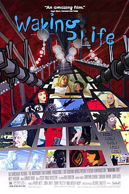

Katlic's Top 3 Movies

|

|

|

|
Summary:
Waking Life is about an un-named young man living an ethereal existence that lacks transitions between everyday events and that eventually
progresses toward an existential crisis. For most of the film he observes quietly but later participates actively in philosophical discussions
involving other characters ranging from quirky scholars and artists to everyday restaurant-goer's and friends about such issues as metaphysics,
free will, social philosophy, and the meaning of life. Other scenes do not even include the protagonist's presence, but rather, show an isolated
person or couple speaking about such topics from a disembodied perspective. Along the way, the film touches also upon existentialism, situations
politics, post-humanity, the film theory of Andrea Bazin and lucid dreaming, and makes references to various celebrated intellectual and literary
figures by name.
Gradually, the protagonist begins to realize that he is living out a perpetual dream, broken up only by occasional false awakening's. So far he is
mostly a passive onlooker, though this changes during a chat with a passing woman who suddenly approaches him. After she eccentrically greets and
shares her creative ideas with him, he reminds himself of his recent realization and of the fact that she must, therefore, be a figment of his
own dreaming imagination. Afterwards, he starts to converse more openly with other dream characters as well; however, he ultimately begins to
despair about being utterly trapped in this unending, irresolvable dream-state.
The protagonist's final talk is with a character who looks somewhat similar to the protagonist himself and whom he briefly encountered previously,
earlier on in the film. This last conversation reveals this other character's understanding that reality may be only a single instant that the
individual interprets falsely as time (and, thus, life); that living is simply the individual's constant negation of God's invitation to become
one with the universe; that dreams offer a glimpse into the infinite nature of reality; and that in order to be free from the illusion called life,
the individual need only to accept God's invitation—though he does not explicitly explain how this is achieved. The protagonist is last seen walking
into a driveway when he suddenly begins to levitate, paralleling a scene at the start of the film of a floating child in the same driveway. Unlike
the child who grabbed firmly onto the handle of a nearby car, however, the protagonist uncertainly reaches toward the same handle but is too swiftly
lifted above the vehicle and over the trees. He now rises into the endless blue expanse of the sky until he disappears from view altogether.
Poster:
Copyright 2013